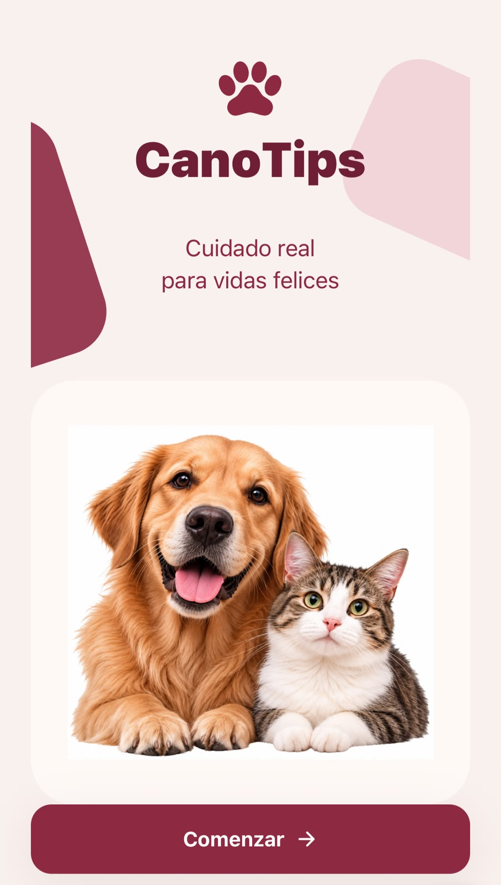
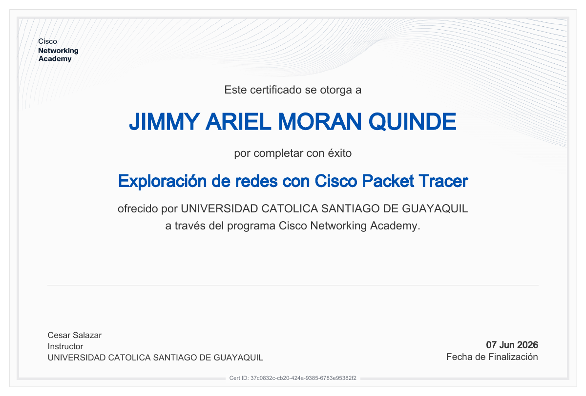
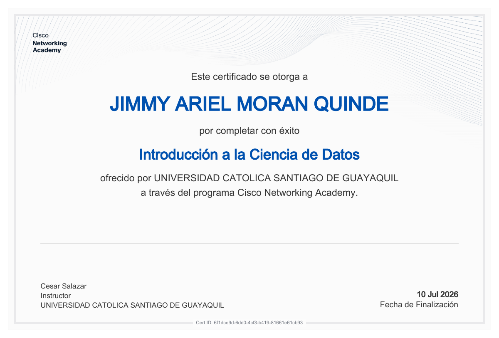
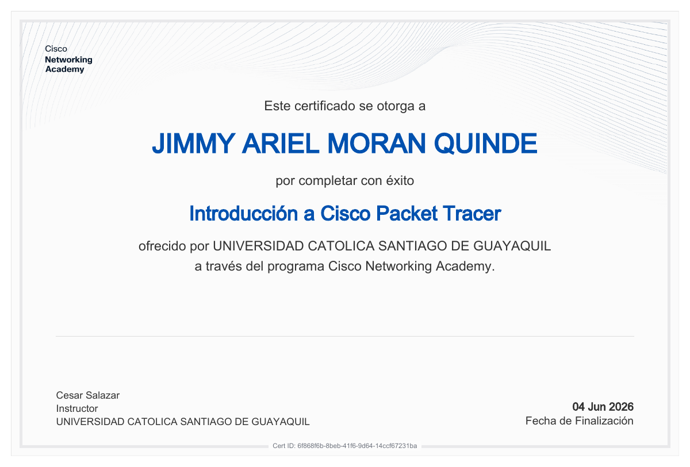
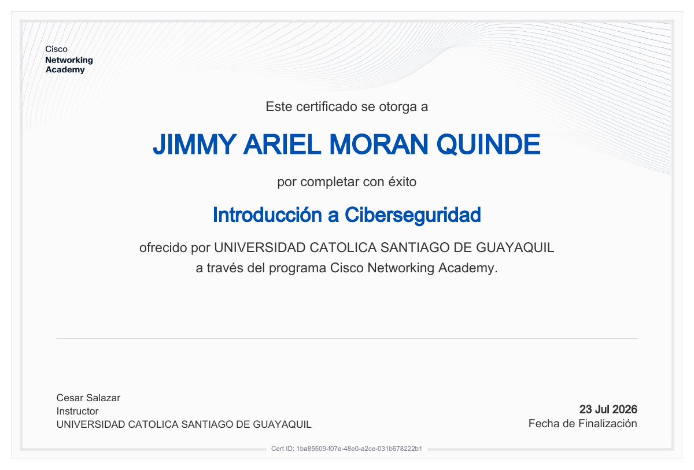
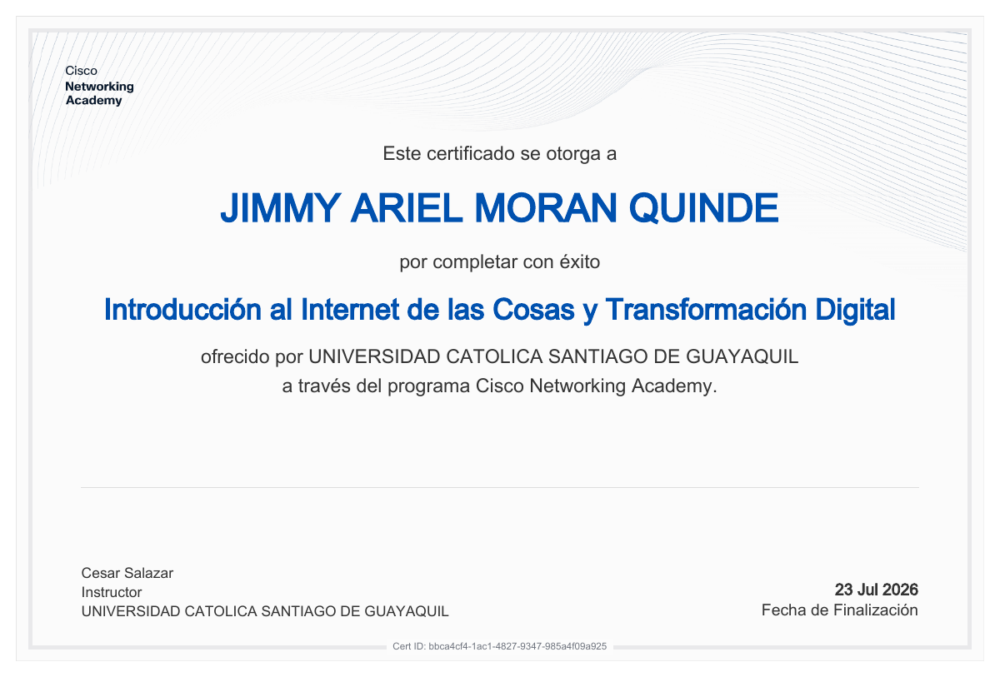

Ingeniería en Ciencias de la Computación
Universidad Católica Santiago de Guayaquil · Año de inicio: 2024 — Actualidad
JIMMY ARIEL MORÁN QUINDE · EN FORMACIÓN
Estudiante de Ingeniería en Ciencias de la Computación. Me gusta construir interfaces claras, útiles y hechas con atención al detalle.
HTML5 ✳ CSS3 ✳ JavaScript ✳ Typescript ✳ React✳ Git & GitHub
01 / SOBRE MÍ
Me mueve la curiosidad de entender cómo funcionan las cosas y las ganas de hacerlas un poco mejores.
Soy Jimmy Ariel Morán Quinde, estudiante de Ingeniería en Ciencias de la Computación. Estoy construyendo mi camino en el desarrollo de software mediante proyectos académicos, cursos y práctica constante.
Me interesan el diseño de interfaces, la accesibilidad y la resolución de problemas. Mi objetivo es participar en proyectos donde pueda aportar, aprender de otras personas y crear herramientas que tengan sentido para quienes las usan.
Mi Perfil · Mis datos de acuerdo a mi historia.
Universidad Católica Santiago de Guayaquil · Año de inicio: 2024 — Actualidad
Desarrollo de aplicaciones web, diseño de interfaces intuitivas y creación de soluciones tecnológicas utilizando HTML, CSS, JavaScript y otras herramientas de programación.
Fortalecer mis conocimientos en programación, desarrollar proyectos cada vez más completos y adquirir experiencia aplicando nuevas tecnologías para resolver problemas reales.
02 / HABILIDADES
Tecnologías que exploro y pongo en práctica.
Siempre hay algo nuevo por aprender.
De la estructura a la experiencia.
Lógica y código para resolver problemas.
Diseño y gestión de información.
Organización, colaboración y control del código.
Construcción de soluciones mediante componentes y lógica.
03 / PROYECTO DESTACADO
Una idea que toma forma.
Mi primer proyecto de desarrollo de software.

Cuidado real para vidas felices.
CanoTips es un proyecto de aplicación orientado al cuidado y bienestar de las mascotas, con una interfaz intuitiva y un diseño amigable que busca facilitar el acceso a información relacionada con su cuidado.
04 / CERTIFICADOS & CURSOS
Cada curso es una nueva perspectiva.
Mi formación en tecnología, redes e inteligencia artificial.

Universidad Católica Santiago de Guayaquil · 12 de junio de 2025
Ver certificado
Universidad Católica Santiago de Guayaquil · 13 de junio de 2025
Ver certificado
Universidad Católica Santiago de Guayaquil · 7 de junio de 2026
Ver certificado
Universidad Católica Santiago de Guayaquil · 10 de julio de 2026
Ver certificado
Universidad Católica Santiago de Guayaquil · 4 de junio de 2026
Ver certificado
Universidad Católica Santiago de Guayaquil · 23 de julio de 2026
Ver certificado
Universidad Católica Santiago de Guayaquil · 23 de julio de 2026
Ver certificado05 / CONECTEMOS
¿Tienes un proyecto, una oportunidad o algo que compartir?
Me encantaria leerte y poder conversar.